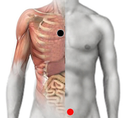

Histoplasma capsulatum
Pares
esófago - vejiga (I)
1ra. costilla - vejiga (I)
diafragma - esófago

Generalidades:
El hongo va directo al pulmón causando síntomas similares a un resfrío, trastornos tanto digestivos como de vejiga. Causante de hiporexia (falta de apetito).Se puede esparcir por todo el cuerpo. Histoplasmosis diseminada.
El hongo habita comunmente en suelos, pero prolifera donda hay excremento de aves o murciélagos. Más probable infectarse, al inhlar las esporas del hongo, en lugares como cuevas, edificios en construcción o demolición.
Síntomas
Los síntomas más comunes: fiebre y escalofríos, tos y dolor en el pecho que empeora al inhalar, dolor en las articulaciones, llagas en la boca, protuberancias rojas, con mayor frecuencia en las piernas.
La infección puede estar activa durante un período corto de tiempo y luego los síntomas desaparecen. A veces, la infección pulmonar puede volverse crónica.
Transmisión
Se trasmite por guano (excremento) de aves; por vía aerea.